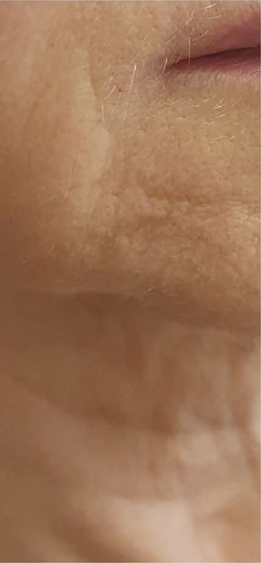
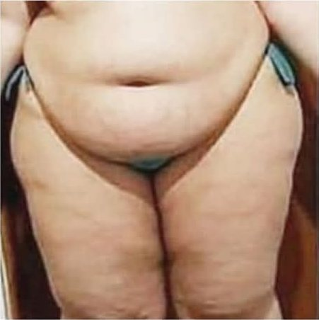
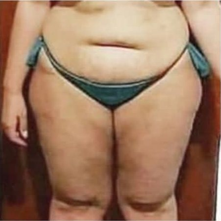
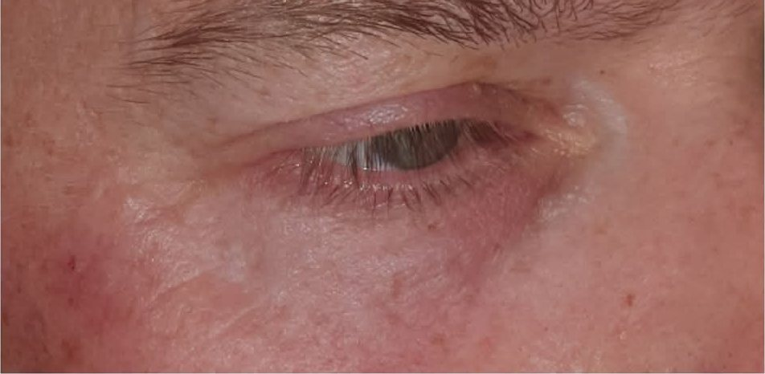

GENEO
Trójdziałaniowa terapia: eksfoliacja, natlenienie skóry od wewnątrz i wprowadzenie substancji aktywnych. Efekt widoczny natychmiast.
Zaawansowane terapie twarzy i ciała, laseroterapia, makijaż permanentny oraz specjalistyczna opieka nad stopami — w jednym gabinecie.

Nie pojedyncze „zabiegi na dobre samopoczucie", ale plan prowadzący do konkretnego efektu: mniej przebarwień, gładsza struktura, lepsze nawilżenie, spłycone blizny.
Trójdziałaniowa terapia: eksfoliacja, natlenienie skóry od wewnątrz i wprowadzenie substancji aktywnych. Efekt widoczny natychmiast.
Zabieg restrukturyzujący skórę oparty na kompozycji kwasów — poprawa napięcia, kolorytu i gęstości.
Migdałowy, glikolowy, Refresh, depigmentujący, Yellow Peel — dobierane do problemu i pory roku.
Profesjonalne terapie depigmentacyjne przy melasmie i uporczywych przebarwieniach.
Zabieg z maską węglową — oczyszczenie, zwężenie porów i wyrównanie kolorytu.
Mechaniczne i ultradźwiękowe złuszczanie naskórka — gładkość i lepsze wchłanianie kosmetyków.
Wprowadzanie substancji aktywnych w głąb skóry bez naruszania jej ciągłości. Bez bólu, bez rekonwalescencji.
Dotlenienie i intensywne nawilżenie — zabieg ratunkowy dla skóry zmęczonej i odwodnionej.
Stymulacja mięśni twarzy prądami — ujędrnienie owalu bez igły i bez skalpela.
Zabieg rewitalizujący z linii Promoitalia: jędrniejsza skóra i przywrócony blask bez rekonwalescencji. Polecany przez dr Dorotę Sagan.
Zabiegi kosmetyczne w Dormed Medical SPA zaczynają się już od 70 zł.
Uporczywy fałdek na brzuchu, boczki, wewnętrzna strona ud — te miejsca oddają tłuszcz najoporniej. Mamy na nie dwa urządzenia i jedną zasadę: technologia wspiera pracę, nie zastępuje jej.


Efekt jest indywidualny i zależy od liczby zabiegów, diety i aktywności fizycznej. Plan ustalamy podczas bezpłatnej konsultacji.
Tam, gdzie kosmetyka nie sięga, wchodzi światło. Laser pozwala usunąć zmiany, z którymi kremy i peelingi sobie nie poradzą — punktowo i bez uszkadzania otoczenia.

Zabieg polega na wprowadzeniu naturalnych barwników pod powierzchnię skóry. Poprawia kształt brwi, podkreśla linię oka lub ust i koryguje asymetrię. Efekt utrzymuje się na skórze około trzech lat.
Modelowanie ciała ma sens wtedy, gdy łączy się z ruchem i dietą. My dokładamy technologię, która przyspiesza to, co robisz sam.


Kompleksowa opieka nad zdrowiem stóp. Zaczynamy od przyczyny, nie od objawu — bo wrastający paznokieć czy modzel prawie zawsze mają swoje „dlaczego".
Pod tym samym adresem działa salon fryzjerski. Dzięki temu cała metamorfoza — skóra, paznokcie, włosy — może się wydarzyć podczas jednej wizyty w Busku-Zdroju.
Klasyczne i nowoczesne strzyżenia dopasowane do struktury włosa i kształtu twarzy.
Spokojnie, bez pośpiechu i bez stresu — także dla najmłodszych klientów.
Koloryzacja, modelowanie i zabiegi regenerujące dla włosów po zimie lub po słońcu.
Terminy fryzjerskie ustalamy telefonicznie: 606 430 365.

{kind=link}